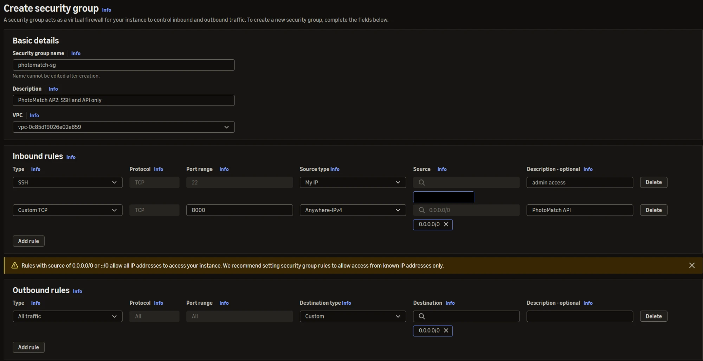
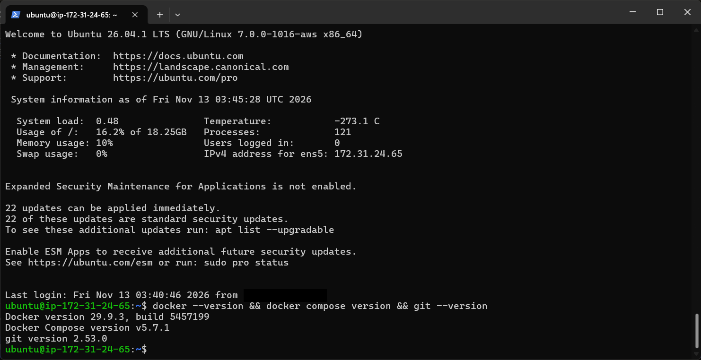
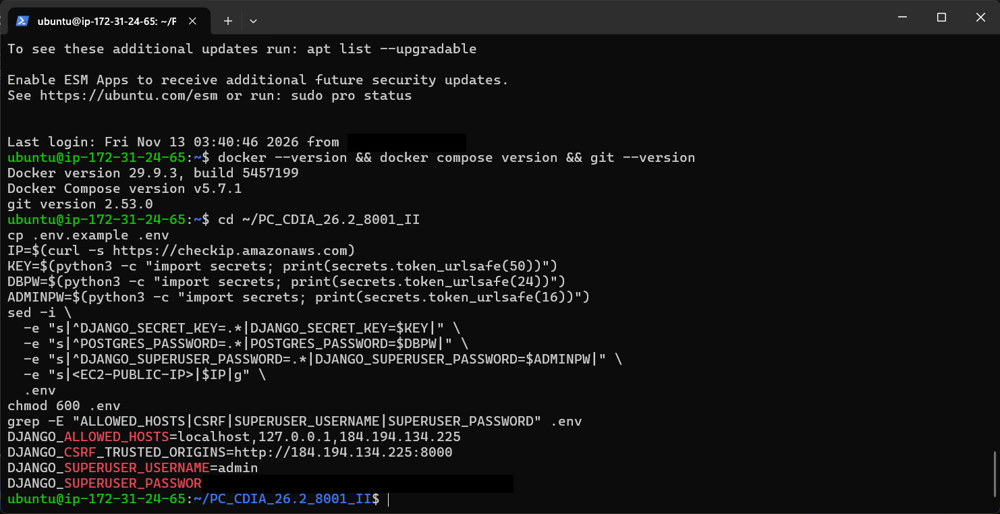
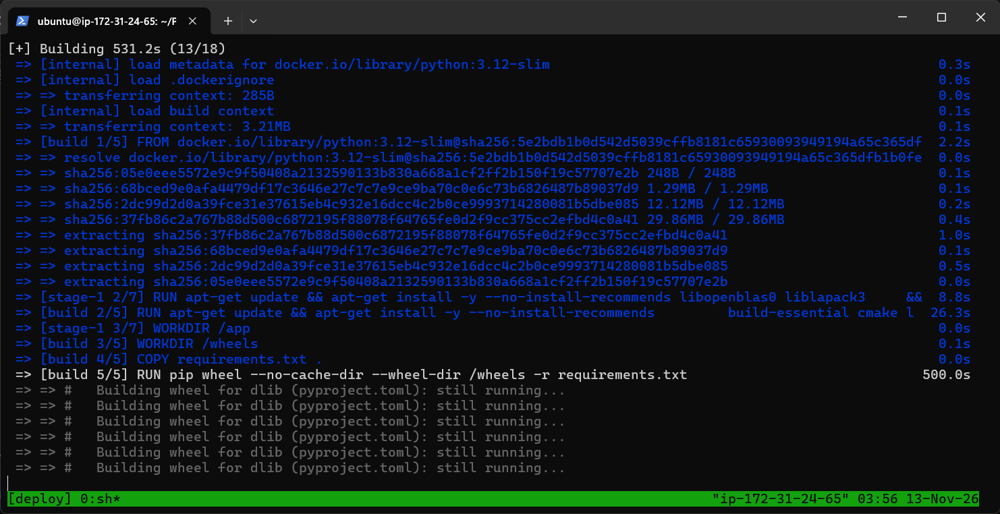
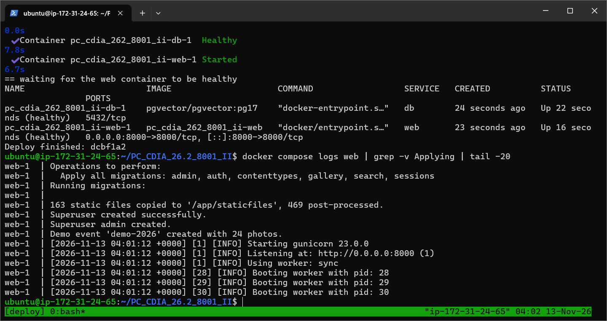
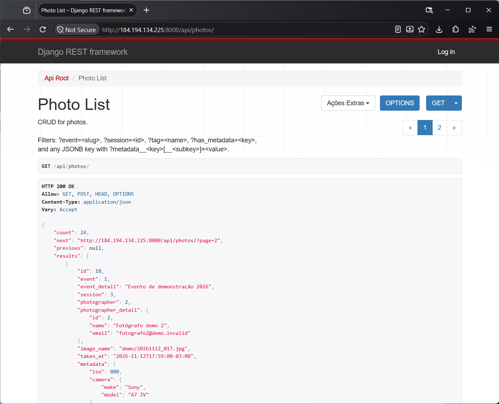
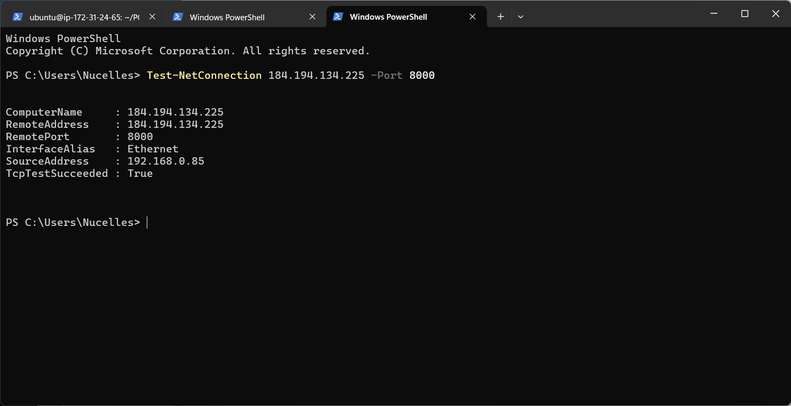
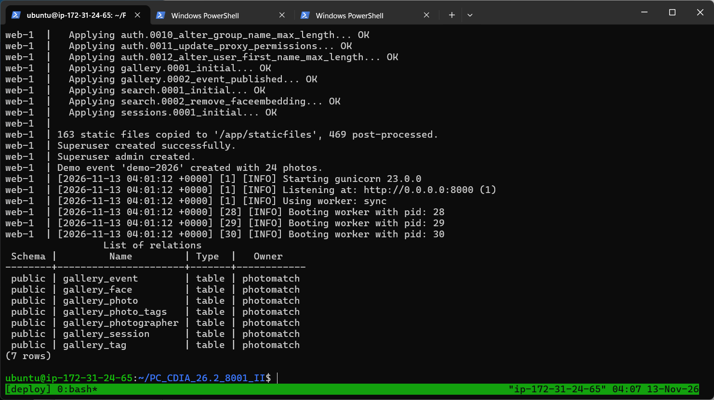
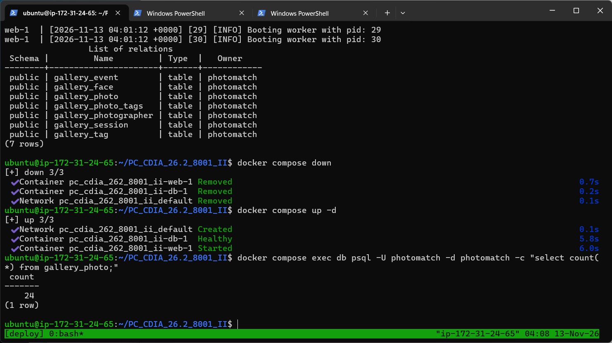

Validação do Deploy (v1.0)¶
SBrT PhotoMatch¶
Fase: Transição
Data: 13/11/2026
Ambiente: EC2 Ubuntu, IP público 184.194.134.225, Docker Compose com web e db
1. Objetivo¶
Registrar as evidências de que a implantação descrita em Atividades de Deploy foi executada na EC2 e atende aos requisitos de deploy da AP2 (B1 a B8). Cada evidência foi capturada na própria instância ou no notebook do operador em 13/11/2026. Os trechos com senha e com o IP pessoal do operador foram cobertos antes da publicação.
2. Resumo¶
| Requisito | O que foi verificado | Resultado | Evidência |
|---|---|---|---|
| B1 | Security Group só com SSH (22, IP do operador) e API (8000); sem regra para 5432 | Atendido | 3.1 |
| B1 | Docker, Docker Compose e Git instalados na EC2 | Atendido | 3.2 |
| A7, B4 | .env criado só na EC2, com segredos gerados e o IP público |
Atendido | 3.3 |
| B2, B3 | Build da imagem web a partir do Dockerfile (dependências e dlib) |
Atendido | 3.4 |
| B2, B5 | web e db saudáveis; migrações, collectstatic, superusuário e Gunicorn no deploy |
Atendido | 3.5 |
| B6 | API acessível pelo IP público | Atendido | 3.6 |
| B6 | Porta 8000 aberta para a internet | Atendido | 3.7 |
| B8 | Migrações aplicadas e tabelas criadas no PostgreSQL | Atendido | 3.8 |
| B7 | Dados mantidos após docker compose down / up |
Atendido | 3.9 |
3. Evidências na EC2¶
3.1 Security Group¶
Regras de entrada do photomatch-sg: SSH (22) somente do IP do operador (coberto na imagem) e TCP 8000 aberto para a API. Não há regra para a porta 5432, então o PostgreSQL não é alcançável de fora. A saída é a padrão (todo o tráfego).

3.2 Ferramentas na EC2¶
Conexão SSH na instância e versões instaladas pelo scripts/ec2-setup.sh: Docker 29.9.3, Docker Compose v5.7.1 e Git 2.53.0.

3.3 Variáveis de ambiente¶
O .env foi criado na EC2 a partir do .env.example, com DJANGO_SECRET_KEY, POSTGRES_PASSWORD e a senha do superusuário gerados aleatoriamente, e com o IP público em DJANGO_ALLOWED_HOSTS e DJANGO_CSRF_TRUSTED_ORIGINS. O arquivo tem permissão 600 e não é versionado (.gitignore). O valor da senha foi coberto na imagem.

3.4 Build da imagem¶
Primeiro sh scripts/deploy.sh dentro do tmux. O estágio de build compila as dependências em wheels; a compilação do dlib é a etapa mais longa (mais de 8 minutos, como mostra a captura), como previsto em Dimensionamento Computacional.

3.5 Containers saudáveis e logs¶
Ao final do deploy, db e web aparecem como healthy. O web publica 0.0.0.0:8000->8000/tcp e o db só expõe 5432 na rede interna do Compose. Os logs mostram as migrações, os 163 arquivos estáticos copiados, a criação do superusuário, o evento de demonstração e o Gunicorn com 3 workers.

3.6 API pelo IP público¶
GET http://184.194.134.225:8000/api/photos/ respondendo 200 OK no navegador, com paginação, evento aninhado, fotógrafo aninhado e o JSONB metadata.

3.7 Porta 8000 acessível¶
Teste feito do notebook do operador com Test-NetConnection 184.194.134.225 -Port 8000: TcpTestSucceeded : True.

3.8 Migrações e tabelas¶
Migrações do Django e do app gallery aplicadas no deploy (incluindo 0002_event_published e a remoção da tabela antiga da AP1), e as 7 tabelas gallery_* listadas com \dt no PostgreSQL do container db.

3.9 Persistência do volume¶
docker compose down remove os containers e a rede; docker compose up -d recria tudo. A contagem de gallery_photo é 24 antes e depois, porque os dados ficam no volume pgdata.

4. Verificações complementares (ambiente Docker local, mesma imagem)¶
Executadas em 11 a 13/11/2026 com a mesma imagem e o mesmo docker-compose.yml:
| Verificação | Resultado |
|---|---|
Testes automatizados (python manage.py test gallery search) |
21 de 21 passando |
Registro transacional com regra violada (POST /api/photos/ingest/ com embedding de 2 valores) |
400 e nenhuma linha gravada em foto, etiqueta ou rosto |
Índice GIN em gallery_photo.metadata |
CREATE INDEX photo_metadata_gin ... USING gin (metadata) |
Busca vetorial (POST /api/search/) |
p50 2,7 ms e p95 4,2 ms |
| Busca por selfie na página, evento SBrT 2025 | foto de origem em primeiro lugar entre 49 resultados |
| Busca por selfie na página, evento Claude Impact Lab | foto de origem entre os 58 resultados |
Backup e restauração (scripts/backup.sh, scripts/restore.sh) |
24 fotos restauradas e API respondendo |
Proteção contra caminhos inválidos de foto (.., caminho absoluto) |
404 |
5. Rastreabilidade¶
| Requisito | Componente | Evidência |
|---|---|---|
| B1 Security Group e ferramentas | EC2, photomatch-sg, scripts/ec2-setup.sh |
3.1, 3.2 |
| B2 Dockerfile e Compose | Dockerfile, docker-compose.yml |
3.4, 3.5 |
| B3 psycopg e banco por ambiente | requirements.txt, photomatch/settings.py |
3.5, 3.8 |
| B4 Segredos fora do Git | .env na EC2, .env.example versionado |
3.3 |
B5 Fluxo de deploy com migrações e collectstatic |
scripts/deploy.sh, docker/entrypoint.sh |
3.5, 3.8 |
| B6 API e Admin pelo IP público | container web, porta 8000 |
3.6, 3.7 |
| B7 Persistência | volume pgdata |
3.9 |
| B8 Evidências no README | README.md, esta página |
seção 3 |
6. Histórico de versões¶
| Versão | Data | Descrição | Autor |
|---|---|---|---|
| 1.0 | 13/11/2026 | Evidências do deploy na EC2 e verificações complementares | Nicholas Borges de Vasconcelos |